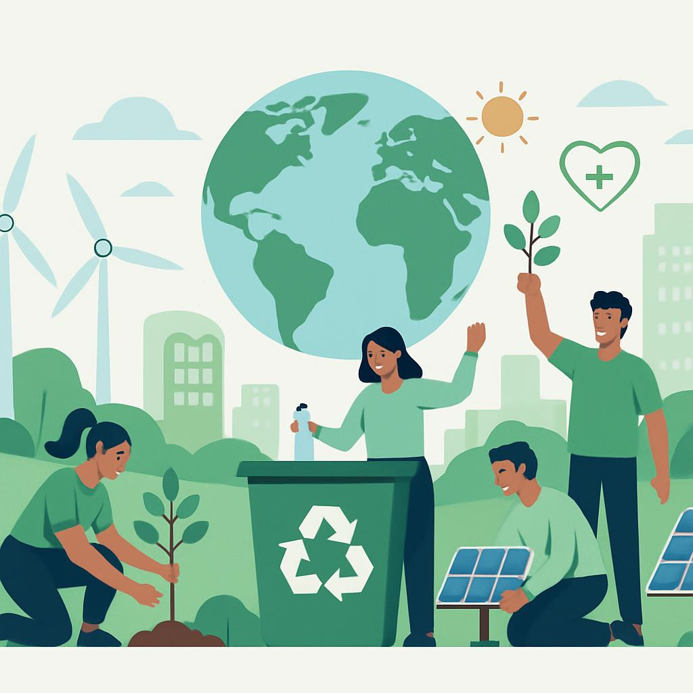

Transforme pequenas atitudes em grandes impactos para o planeta
Este projeto tem como objetivo transformar ações sustentáveis em uma experiência interativa e motivadora. Os usuários enviam vídeos comprovando suas ações e recebem uma pontuação com base no impacto ambiental positivo.

Sobre o projeto
O projeto SoulUp EcoScore foi idealizado com o objetivo de promover o engajamento dos usuários em ações sustentáveis do dia a dia.
A proposta utiliza gamificação para tornar a experiência mais interativa, educativa e motivadora, incentivando hábitos mais conscientes e responsáveis.
Funcionalidades
Desafios
Participe de tarefas sustentáveis e desenvolva hábitos positivos.
Pontuação
Ganhe pontos ao concluir ações ecológicas no seu dia a dia.
Ranking
Veja sua posição em relação a outros usuários da plataforma.
Perfil
Acompanhe seu histórico, conquistas e evolução pessoal.